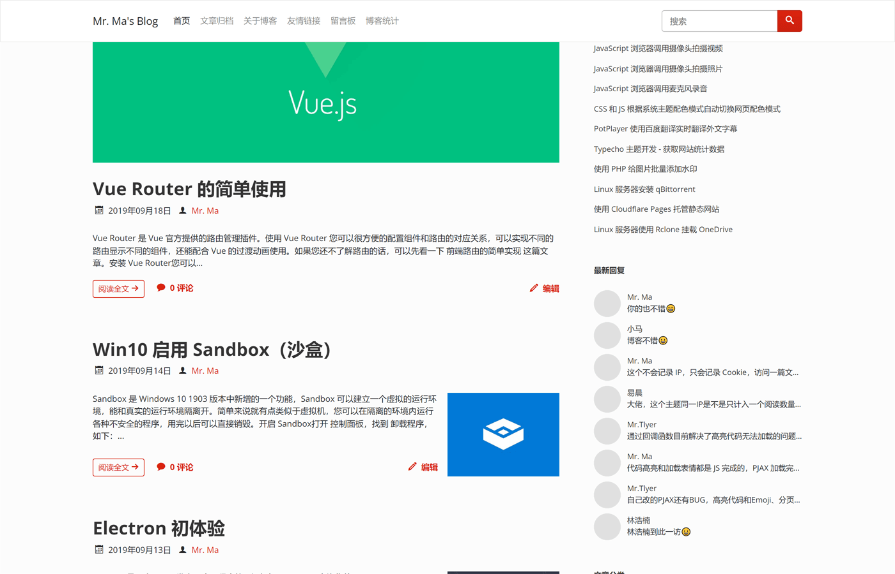

Facile 是一套简洁的 Typecho 博客主题，也是我的博客正在使用的主题。
之前我用的主题是 MWordStar ，时间长了就想换一下外观，本来想再给 MWordStar 增加一套样式，但是外观变动比较大，而且 MWordStar 已经有几套样式了，所以重新开发一套主题。
主题演示地址：https://www.misterma.com/
主题下载地址：https://github.com/changbin1997/Facile/releases
下载时请选择 Facile-bundle.zip ，否则前端 JS 代码无法在 IE 系列浏览器运行。
主题 Github 仓库：https://github.com/changbin1997/Facile
下面是主题首页截图：
不包含文章头图的截图：
小头图模式：

也可以给文章设置单独的头图样式：

Facile 相比 MWordStar 来说，外观要更简洁一些，功能也会少一些，MWordStar 有的功能以后也会陆续增加到 Facile 中，但是 Facile 的功能以后也不会有 MWordStar 多。
Facile 目前还没有专门的使用说明文档，Facile 的功能设置和 MWordStar 是差不多的，可以直接参考 MWordStar 的使用说明文档 ，有问题也可以到 留言板 或 Facile 的介绍文章页 留言。
特点和功能
- 响应式设计
- 无障碍适配（Accessibility）
- 包含浅色和深色两套配色
- 代码高亮
- 自带点赞功能
- 丰富的侧边栏组件
- 丰富的设置选项
- 详细的图表统计
- 评论区自带 Emoji 表情面板
- 长期维护
安装
在 Releases 下载的主题是一个 zip 格式的压缩包，把压缩包上传到 Typecho 目录下的 usr/themes/ 目录，然后解压，解压后应该可以看到一个 Facile 目录。
登录 Typecho 后台，在顶部导航栏的 控制台 菜单选择 外观 ，如果存放位置没有错误的话就可以看到 Facile 主题了，点击 启用 。
主题依赖
主题主要用到了以下几个库：
- bootswatch 不同风格的 Bootstrap 主题
- jQuery DOM 操作和 Bootstrap 依赖
- qrious 生成二维码的 JS 库
- highlight.js 代码高亮
- ECharts 百度开源的图表库，用于 统计页 生成统计图
后端没有用到任何库。
ECharts 的库比较大，所以只引入了饼图和日历图，而且只会在统计页加载。Bootstrap 的 JS 使用 Webpack 打包过的发行版也只引入了用到的模块。
主题的图标使用的是 IcoMoon 的字体图标，IcoMoon 的图标可以自定义，所以主题中只包含几个用到的图标。
前端 JS 使用的是 ES6 语法，在 IE 系列的浏览器（包括 IE11）是无法运行的，如果没有二次开发需求的话，可以在 Releases 下载 Facile-bundle.zip 发行版，发行版使用了 Webpack + Babel 来打包和转换，可以在 IE 运行。
代码高亮
代码高亮目前包含三套主题配色，分别是 Stack Overflow（浅色）、VS2015（深色）、Sunburst（高对比度）。目前支持 30 多种语言的代码高亮。
支持的语言和 MWordStar 是一样的，可以访问 MWordStar 代码高亮 查看支持的语言。
统计页
主题包含一个统计页模板，你可以在后台创建页面，页面的自定义模板选择 网站数据，标题可以随便写，创建完成后就可以在顶部导航栏访问了。
统计页包含基本的数据统计、分类文章占比图、文章更新日历图、评论动态日历图、阅读量排名前 5 的文章、评论量排名前 5 的文章。
基本数据统计如下：
分类占比统计图如下：
下面是评论动态日历图：
文章动态日历图和评论动态的日历图是差不多的，屏幕尺寸不同显示的月份数量也不同。
下面是文章评论排名表格：
文章阅读量排名表格和评论量排名的表格也是差不多的。
统计页面演示可以访问 https://www.misterma.com/data.html 。
无障碍（Accessibility）
上网对于大多数人来说是一件再简单不过的事，但是对于一些身体有缺陷的残障人士来说却是一件非常困难的事。目前国内的很多网站和 App 都只注重外观，忽略了残障人士的 可访问性，甚至有的 App 在开启屏幕阅读器的情况下都无法正常使用。
Facile 主题针对屏幕阅读器做了大量优化，并在 MVDA 和 VoiceOver 这两款屏幕阅读器上做过测试，无论是 PC 还是移动设备都能完美朗读（除了日历图），主题能准确传达需要朗读的内容和信息，对于盲人来说，使用标准的屏幕阅读器基本可以无障碍操作。
主题可完美支持键盘访问，颜色对比度也符合标准。
小提示：如果您是屏幕阅读器用户，为了您的浏览体验，不建议使用 IE 浏览器。
其他功能
主题自带友情链接功能，友链可以分为 全站、首页、独立页 三种显示方式。友链需要在主题设置中填写 JSON 数据，格式和说明可以简单参考 MWordStar 友情链接 。
文章头图目前支持手动输入和自动获取文章中的第一张图片作为文章头图，你可以在撰写文章页的下方设置。
插件适配
因为我需要用到 Sticky 文章置顶插件，所以这个主题也直接适配了 Sticky 插件，Sticky 插件安装完成后无需修改主题。
兼容性
主题用到了少量的 CSS3，常见的浏览器都能完美兼容，IE 系列浏览器需要达到 IE10 才能完美兼容。
JavaScript 用到了 ES6，打包的发行版可以完美兼容 IE，开发版不支持 IE 系列浏览器和一些较老的浏览器。

我用的也是这个主题